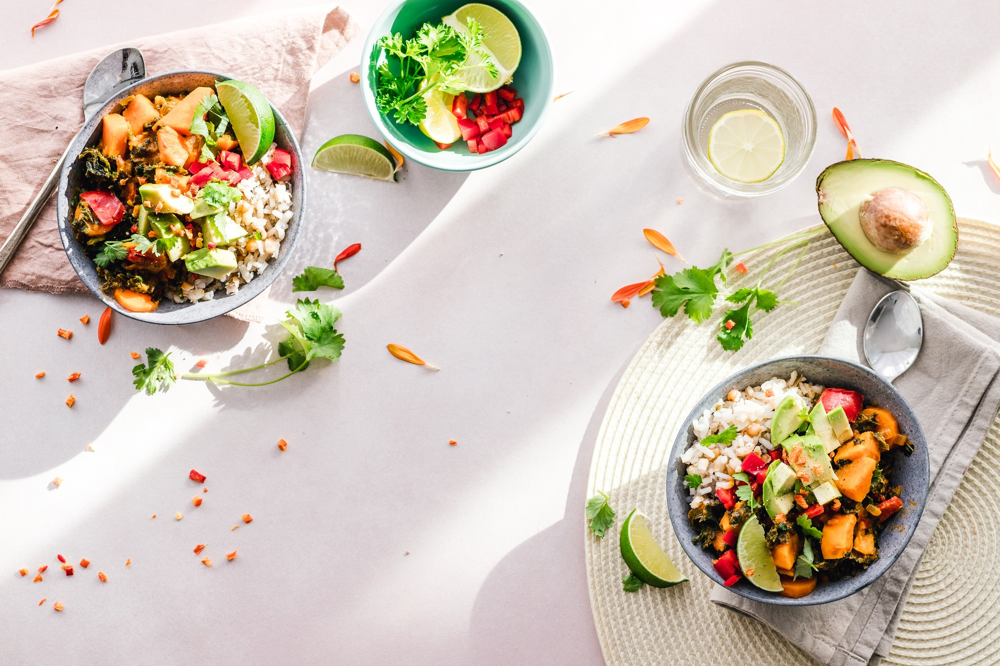

Leigh's Creamy Broccoli Slaw Salad Recipe

Description
This is a magic combination of several recipes I've tried and served for my family and friends.
I've used different ramen noodle flavors. Feel free to experiment based on your tastes.
Ingredients
- 1 cup mayonnaise
- ¼ cup apple cider vinegar
- 2 tablespoons white sugar
- ⅛ teaspoon celery seed
- 1 (3 ounce) package Oriental-flavored ramen noodles, broken into small pieces
- 1 tablespoon olive oil
- 1 tablespoon sesame oil
- ¼ cup slivered almonds
- 1 (12 ounce) package broccoli coleslaw mix
- ½ cup chopped onion
- ¼ cup unsalted sunflower seeds
Steps
- Mix mayonnaise, vinegar, sugar, celery seed, and ramen noodle seasoning packet in a bowl; chill in refrigerator.
- Heat olive oil and sesame oil in a skillet over medium heat; cook and stir ramen noodles and almonds until toasted, stirring frequently, 3 to 5 minutes. Remove from heat and cool.
- Combine ramen noodles, almonds, broccoli coleslaw mix, onion, sunflower seeds, and dressing in a bowl; stir to coat.
Back To Home Page